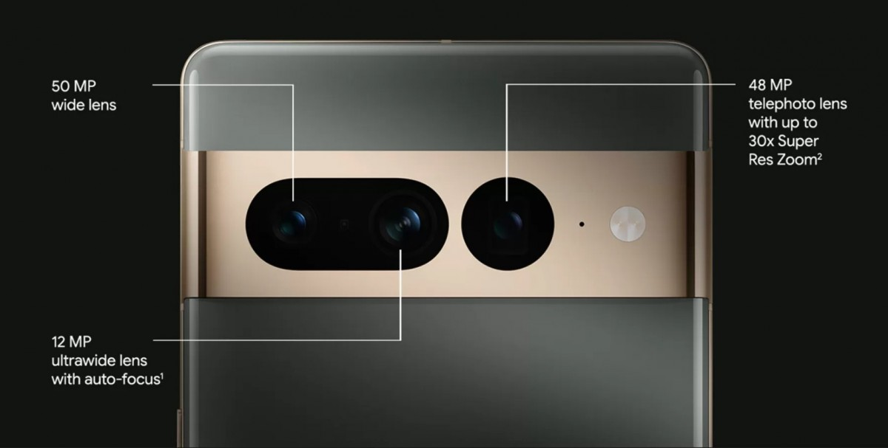
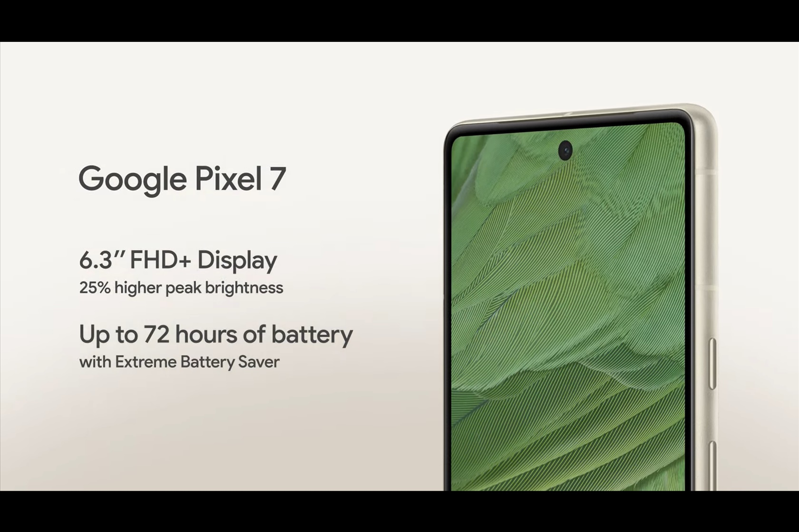
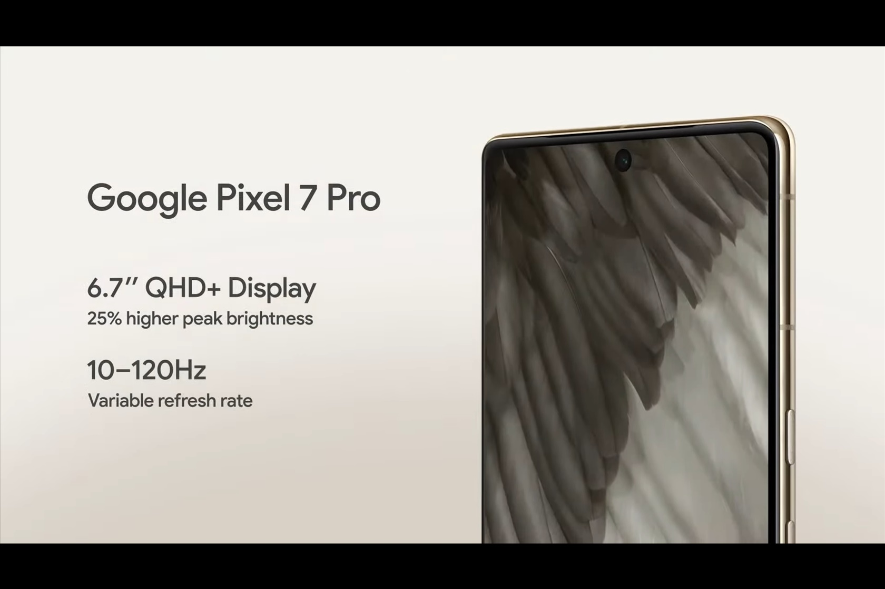

Pixel 7 and 7 Pro
 Pixel 7 и 7 Pro имеет на борту мощный чип Google Tensor 2, который разработан Google вместе с Samsung.
Этот 8 ядерный чипсет изготовлен по 5-нанометровому техпроцессу. Он имеет 2 ядра Cortex-X1 на 2850 МГц, 2 ядра Cortex-A78 на 2350 МГц и 4 ядра Cortex-A55 на 1800 МГц.
Pixel 7 и Pixel 7 Pro большая мощность ни к чему — это не игровые модели. В то же время за счёт оптимизации Android 13 в реальных сценариях использования новинки могут оказаться лучше иных флагманов. И, естественно, акцент в SoC сделан на возможностях ИИ и машинного обучения (особенно это касается камеры): в этом плане Tensor G2 должна быть если не впереди, то на уровне иных топовых SoC.
CPU представлен двумя ядрами Cortex-X1, двумя Cortex-A76 и четырьмя Cortex-A55, Конфигурация та же, что и в первой Tensor, но частоты чуть выше. Зато GPU новый — Arm Mali-G710 MC10 вместо Mali-G78. Именно на него ложится наибольшая нагрузка при ускорении задач ИИ. У каждой модели по две конфигурации: 8/128 и 8/256 ГБ у Pixel 7 и 12/128 и 12/256 ГБ у Pixel 7 Pro.Новый чип более энерго-эффективнее и мощнее чем прошлогодний его версия.
Pixel 7 и 7 Pro имеет на борту мощный чип Google Tensor 2, который разработан Google вместе с Samsung.
Этот 8 ядерный чипсет изготовлен по 5-нанометровому техпроцессу. Он имеет 2 ядра Cortex-X1 на 2850 МГц, 2 ядра Cortex-A78 на 2350 МГц и 4 ядра Cortex-A55 на 1800 МГц.
Pixel 7 и Pixel 7 Pro большая мощность ни к чему — это не игровые модели. В то же время за счёт оптимизации Android 13 в реальных сценариях использования новинки могут оказаться лучше иных флагманов. И, естественно, акцент в SoC сделан на возможностях ИИ и машинного обучения (особенно это касается камеры): в этом плане Tensor G2 должна быть если не впереди, то на уровне иных топовых SoC.
CPU представлен двумя ядрами Cortex-X1, двумя Cortex-A76 и четырьмя Cortex-A55, Конфигурация та же, что и в первой Tensor, но частоты чуть выше. Зато GPU новый — Arm Mali-G710 MC10 вместо Mali-G78. Именно на него ложится наибольшая нагрузка при ускорении задач ИИ. У каждой модели по две конфигурации: 8/128 и 8/256 ГБ у Pixel 7 и 12/128 и 12/256 ГБ у Pixel 7 Pro.Новый чип более энерго-эффективнее и мощнее чем прошлогодний его версия.
ХАРАКТЕРИСТИКИ
Камера Pixel 7 представлена двумя модулями.В основной - 50-мегапиксельный сенсор,широкоугольный объектив и оптическая стабилизация,в другом — 12-мегапиксельный датчик и сверхширокоугольный объектив.В Pixel 7 Pro есть и третий модуль—с датчиком разрешением 48 Мп и объективом, обеспечивающим 5-кратный оптический зум. Соответственно, максимальный зум в Pixel 7 — 8x, в Pixel 7 Pro — 30x. Из общего — обе модели поддерживают беспроводную зарядку, оснащены чипами Titan M2 и имеют защиту от пыли и воды в соответствии со степенью IP68. Фронтальные камеры тоже одинаковые — с сенсорами разрешением 10,8 Мп и поддержкой записи видео 4К.
Pixel 7 Pro получил экран OLED с диагональю 6,7 дюйма, разрешением QHD+ и кадровой частотой 120 Гц. У Pixel 7 дисплей попроще: 6,3 дюйма, Full HD+ и 90 Гц.Ёмкость аккумулятора Pixel 7 Pro составила 5000 мА·ч, ёмкость аккумулятора Pixel 7— 4355 мА·ч. За Pixel 7 в базовой конфигурации просят 600 долларов или 650 евро, за Pixel 7 Pro — 800 долларов или 900 евро.
 ОБЗОРЫ